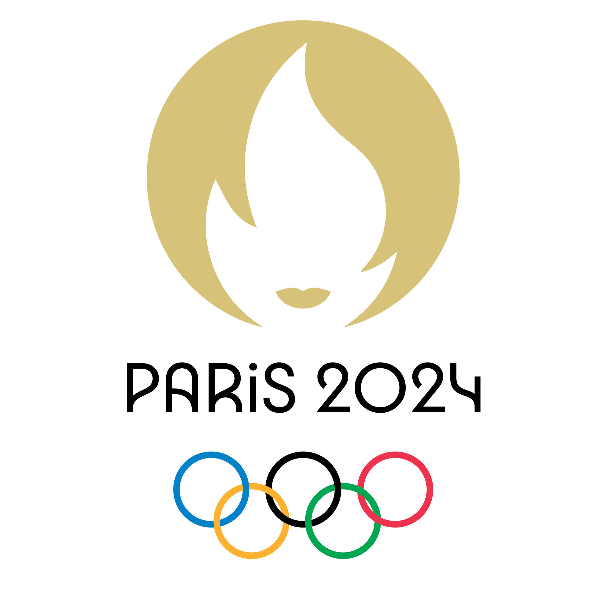

Início
Sobre
Competições
Medalhas
Olimpíadas 2024
Descubra os esportes, os atletas mais premiados e curiosidades sobre as Olimpíadas.
Mascote das Olimpíadas 2024
Os Dez Esportes Olímpicos Mais Populares
Atletismo - Usain Bolt
Natação - Michael Phelps
Ginástica Artística - Simone Biles
Futebol - Lionel Messi
Tênis - Roger Federer
Basquete - Michael Jordan
Vôlei - Karch Kiraly
Judô - Teddy Riner
Ciclismo - Chris Hoy
Boxe - Muhammad Ali